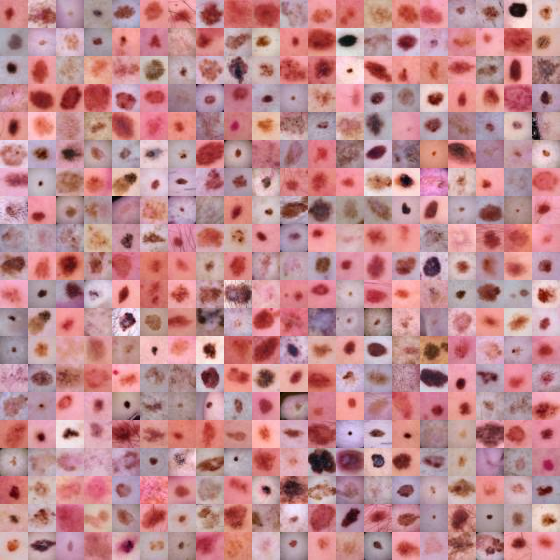
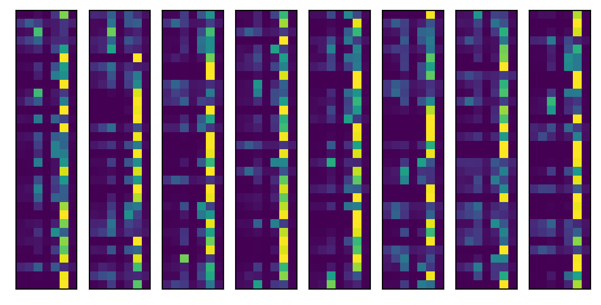
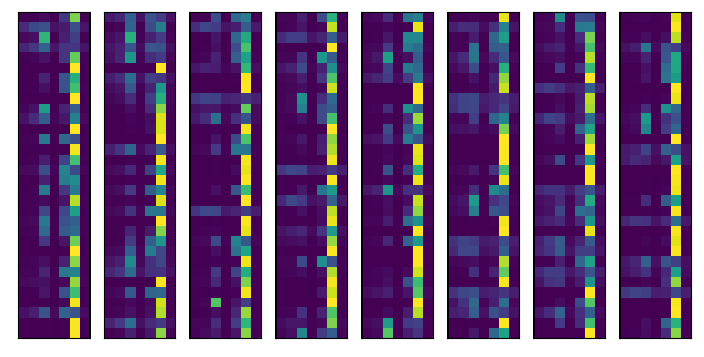
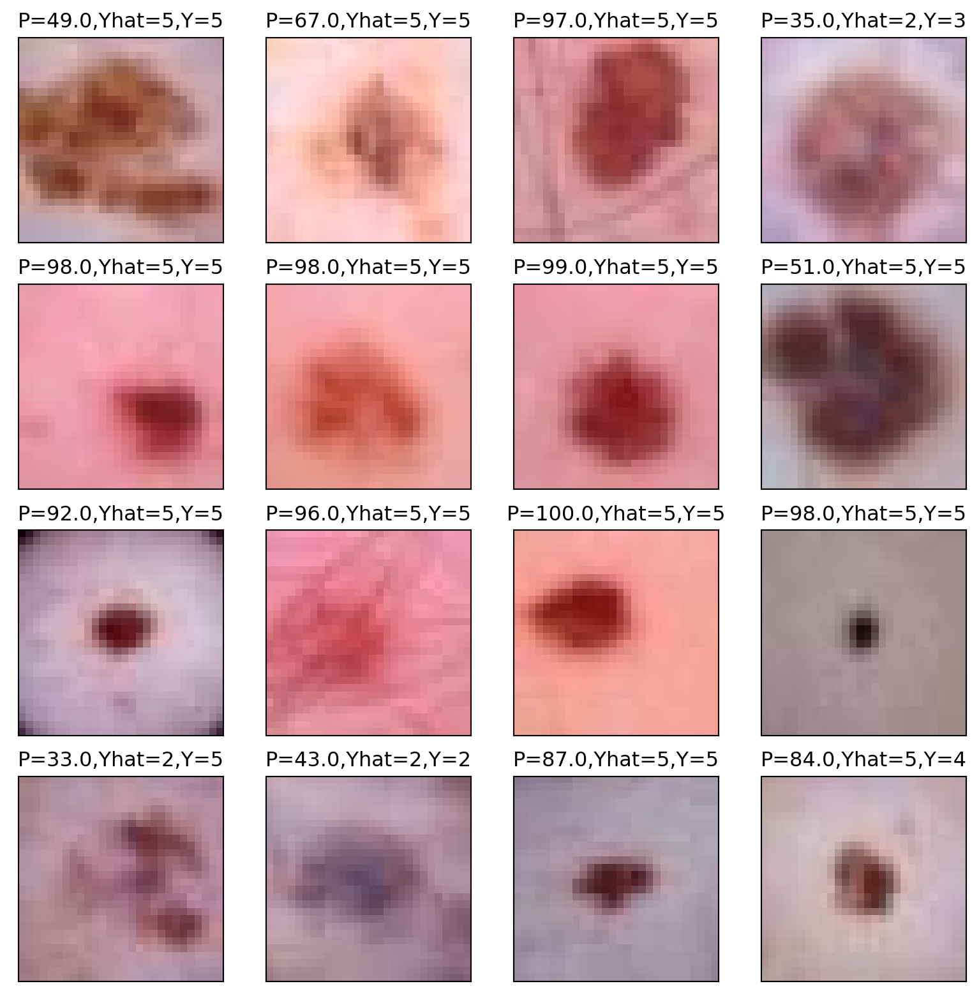

from tqdm import tqdm
import numpy as np
import torch
import torch.nn as nn
import torch.optim as optim
import torch.utils.data as data
import torchvision
import torchvision.transforms as transforms
import medmnist
from medmnist import INFO, Evaluator
import matplotlib.pyplot as plt10 Example convnet
10.1 Medical MNIST
Medical images offer unique challenges for imaging. A common format for medical images is dicom. Most medical images are 3D or 4D grayscale images. To get a sense of working with medical images, let’s consider a set of 2D color images from the medical mnist library (Yang et al. 2021). A tutorial for working with these images can be found here. These are images of moles to determine whether or not they are cancerous. We’ll follow along with the medmnist code then investigate the output.
Here are the imports
The dermamnist code downloads the data and loads it into a pytorch dataloader. It also keeps track of outcomes.
## Using the code from https://github.com/MedMNIST/MedMNIST/blob/main/examples/getting_started.ipynb
data_flag = 'dermamnist'
## This defines our NN parameters
NUM_EPOCHS = 10
BATCH_SIZE = 128
lr = 0.001
info = INFO[data_flag]
task = info['task']
n_channels = info['n_channels']
n_classes = len(info['label'])
data_transform = transforms.Compose([
transforms.ToTensor(),
transforms.Normalize(mean=[.5], std=[.5])
])
DataClass = getattr(medmnist, info['python_class'])
# load the data
train_dataset = DataClass(split = 'train', transform = data_transform, download = True)
test_dataset = DataClass(split = 'test' , transform = data_transform, download = True)
pil_dataset = DataClass(split = 'train', download = True)
train_loader = data.DataLoader(dataset=train_dataset, batch_size=BATCH_SIZE, shuffle=True)
train_loader_at_eval = data.DataLoader(dataset=train_dataset, batch_size= 2 * BATCH_SIZE, shuffle=False)
test_loader = data.DataLoader(dataset=test_dataset, batch_size=2*BATCH_SIZE, shuffle=False)Using downloaded and verified file: /home/bcaffo/.medmnist/dermamnist.npz
Using downloaded and verified file: /home/bcaffo/.medmnist/dermamnist.npz
Using downloaded and verified file: /home/bcaffo/.medmnist/dermamnist.npzLet’s look at a montage of images. Here is the Mayo clinic’s page for investigating moles for potential cancer. To quote them, use the ABCDE method, which they define exactly as below
- A is for asymmetrical shape. Look for moles with irregular shapes, such as two very different-looking halves.
- B is for irregular border. Look for moles with irregular, notched or scalloped borders — characteristics of melanomas.
- C is for changes in color. Look for growths that have many colors or an uneven distribution of color.
- D is for diameter. Look for new growth in a mole larger than 1/4 inch (about 6 millimeters).
- E is for evolving. Look for changes over time, such as a mole that grows in size or that changes color or shape. Moles may also evolve to develop new signs and symptoms, such as new itchiness or bleeding.
Our data is cross sectional. So parts of C and D and all of E are challenging. We do not have patient retrospective reports.
train_dataset.montage(length=20)/home/bcaffo/miniconda3/envs/ds4bio/lib/python3.10/site-packages/medmnist/utils.py:25: FutureWarning:
`multichannel` is a deprecated argument name for `montage`. It will be removed in version 1.0. Please use `channel_axis` instead.

Here are the labels
info['label']{'0': 'actinic keratoses and intraepithelial carcinoma',
'1': 'basal cell carcinoma',
'2': 'benign keratosis-like lesions',
'3': 'dermatofibroma',
'4': 'melanoma',
'5': 'melanocytic nevi',
'6': 'vascular lesions'}Here is the medmnist NN. Note convd has argument in_channels, out_channels, kernel_size. So, in this case the number of channels in is 3 and in the first layer it puts out a 16 channel image obtained by convolving a 3x3 kernels with each channel, summing up over the channels, adding bias terms, then repeating that 15 more times (documentaiton).
class Net(nn.Module):
def __init__(self, in_channels, num_classes):
super(Net, self).__init__()
self.layer1 = nn.Sequential(
nn.Conv2d(in_channels, 16, kernel_size=3),
nn.BatchNorm2d(16),
nn.ReLU())
self.layer2 = nn.Sequential(
nn.Conv2d(16, 16, kernel_size=3),
nn.BatchNorm2d(16),
nn.ReLU(),
nn.MaxPool2d(kernel_size=2, stride=2))
self.layer3 = nn.Sequential(
nn.Conv2d(16, 64, kernel_size=3),
nn.BatchNorm2d(64),
nn.ReLU())
self.layer4 = nn.Sequential(
nn.Conv2d(64, 64, kernel_size=3),
nn.BatchNorm2d(64),
nn.ReLU())
self.layer5 = nn.Sequential(
nn.Conv2d(64, 64, kernel_size=3, padding=1),
nn.BatchNorm2d(64),
nn.ReLU(),
nn.MaxPool2d(kernel_size=2, stride=2))
self.fc = nn.Sequential(
nn.Linear(64 * 4 * 4, 128),
nn.ReLU(),
nn.Linear(128, 128),
nn.ReLU(),
nn.Linear(128, num_classes))
def forward(self, x):
x = self.layer1(x)
x = self.layer2(x)
x = self.layer3(x)
x = self.layer4(x)
x = self.layer5(x)
x = x.view(x.size(0), -1)
x = self.fc(x)
return x
model = Net(in_channels=n_channels, num_classes=n_classes)
criterion = nn.CrossEntropyLoss()
optimizer = optim.SGD(model.parameters(), lr=lr, momentum=0.9)for epoch in range(NUM_EPOCHS):
train_correct = 0
train_total = 0
test_correct = 0
test_total = 0
model.train()
for inputs, targets in train_loader:
# forward + backward + optimize
optimizer.zero_grad()
outputs = model(inputs)
if task == 'multi-label, binary-class':
targets = targets.to(torch.float32)
loss = criterion(outputs, targets)
else:
targets = targets.squeeze().long()
loss = criterion(outputs, targets)
loss.backward()
optimizer.step()There’s some evaluation methods included.
def test(split):
model.eval()
y_true = torch.tensor([])
y_score = torch.tensor([])
data_loader = train_loader_at_eval if split == 'train' else test_loader
with torch.no_grad():
for inputs, targets in data_loader:
outputs = model(inputs)
outputs = outputs.softmax(dim=-1)
if task == 'multi-label, binary-class':
targets = targets.to(torch.float32)
else:
targets = targets.squeeze().long()
targets = targets.float().resize_(len(targets), 1)
y_true = torch.cat((y_true, targets), 0)
y_score = torch.cat((y_score, outputs), 0)
y_true = y_true.numpy()
y_score = y_score.detach().numpy()
evaluator = Evaluator(data_flag, split)
metrics = evaluator.evaluate(y_score)
print('%s auc: %.3f acc:%.3f' % (split, *metrics))
print('==> Evaluating ...')
test('train')
test('test')==> Evaluating ...train auc: 0.872 acc:0.718test auc: 0.871 acc:0.707Let’s look into the levels. First let’s grab a batch. Since the code above already looped over batches, let’s just use the last batch. Here’s now you can run it through the model. Then we’ll look at the predictions for a batch. Recall there are 7 tumor types, so we plot our predictions as an image (in 4 little bars since it’s too long otherwise).
inputs, targets = iter(test_loader).next()
outputs = model(inputs)
outputs = outputs.softmax(dim=-1)
I, J = outputs.shape
for i in range(8):
plt.subplot(1,8,i+1)
plt.xticks([])
plt.yticks([])
plt.imshow(outputs.detach().numpy()[int(i * I / 8 ) : int((i + 1) * I / 8), :]);
batch = outputs.detach().numpy()
#grab 16 images to plot
indices = np.random.permutation(np.array(range(I)))[0 : 16]
## The associated
actual = targets.squeeze(-1).numpy()[indices]
target_pred = batch.argmax(axis = 1)[indices]
target_prob = np.round(batch.max(axis = 1) * 100)[indices]
images = inputs.numpy()[indices,:,:,:]
plt.figure(figsize=(10,10))
for i in range(16):
plt.subplot(4,4,i+1)
plt.xticks([])
plt.yticks([])
img = np.transpose(images[i,:,:,:], (1, 2, 0));
img = ((img + 1)* 255/2).astype(np.uint8)
plt.title("P="+str(target_prob[i])+",Yhat="+str(target_pred[i])+",Y="+ str(actual[i]))
plt.imshow(img);
Look at the convolutional layers
l1 = model.layer1(inputs)
## plot one
images = l1.detach().numpy()[indices,:,:,:]
i = 0
plt.figure(figsize=(10,10))
for h in range(16):
plt.subplot(4,4,h+1)
plt.xticks([])
plt.yticks([])
img = images[i,h,:,:];
plt.imshow(img);